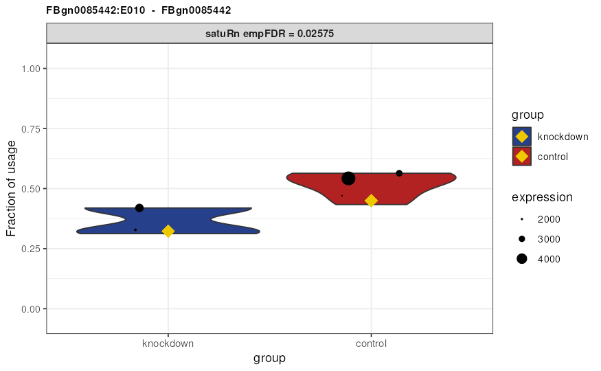

Vignette for exon-level analyses
Jeroen Gilis
Ghent University, Ghent, Belgium14/02/2023
Source:vignettes/Vignette_exon.Rmd
Vignette_exon.RmdAbstract
Vignette that describes how to use satuRn for performing differential exon usage analyses.
In order to demonstrate the ability of satuRn to perform
a differential exon usage (DEU)
analysis, as opposed to a differential transcript usage (DTU)
analysis, we perform the DEU analysis described in the vignette
of DEXSeq. Note that for satuRn there is no
real distinction between performing a transcript-level or exon-level
analysis. Once a proper input object is provided, with each row
corresponding to a sub gene-level feature, satuRn will
perform a differential usage analysis regardless of the specific feature
type.
In this script, we perform a DEU analysis on the same dataset as in
the DEXSeq vignette, i.e. a subset of the
pasilla bulk RNA-Seq dataset by (Brooks et al.,
2011), which can be obtained with the Bioconductor experiment package pasilla.
Brooks et al. investigated the effect of siRNA knock-down of
the gene pasilla on the transcriptome of fly S2-DRSC cells. The
RNA-binding protein pasilla protein is thought to be involved in the
regulation of splicing. (Its mammalian orthologs, NOVA1 and NOVA2, are
well-studied examples of splicing factors.)
Load and wrangle data
First, we load the data files of the pasilla dataset as
processed by the authors of the DEXSeq vignette.
inDir <- system.file("extdata", package="pasilla")
countFiles <- list.files(inDir, pattern="fb.txt$", full.names=TRUE)
flattenedFile <- list.files(inDir, pattern="gff$", full.names=TRUE)
sampleTable <- data.frame(row.names = c( "treated1", "treated2", "treated3",
"untreated1", "untreated2", "untreated3",
"untreated4" ),
condition = c("knockdown", "knockdown", "knockdown",
"control", "control", "control", "control"),
libType = c("single-end", "paired-end", "paired-end",
"single-end", "single-end", "paired-end", "paired-end"))Next, we use the wrapper DEXSeqDataSetFromHTSeq function
of the DEXSeq package to create a
DEXSeqDataSet object from the raw data files. In addition,
we subset the data to a selected set of genes created by the authors of
the DEXSeq vignette, with the purpose of limiting the
vignette runtime.
dxd <- DEXSeqDataSetFromHTSeq(countFiles,
sampleData=sampleTable,
design= ~ sample + exon + libType:exon + condition:exon,
flattenedfile=flattenedFile)## Warning in DESeqDataSet(rse, design, ignoreRank = TRUE): some variables in
## design formula are characters, converting to factors
genesForSubset <- read.table(file.path(inDir, "geneIDsinsubset.txt"),
stringsAsFactors=FALSE)[[1]]
dxd <- dxd[geneIDs(dxd) %in% genesForSubset,]
dxd # only 498 out of 70463 exons retained## class: DEXSeqDataSet
## dim: 498 14
## metadata(1): version
## assays(1): counts
## rownames(498): FBgn0000256:E001 FBgn0000256:E002 ... FBgn0261573:E015
## FBgn0261573:E016
## rowData names(5): featureID groupID exonBaseMean exonBaseVar
## transcripts
## colnames: NULL
## colData names(4): sample condition libType exonNext, we remove exons with zero counts in all samples, and exon that
are the only exon within a gene. This filtering is optional, but
recommended. Not filter lowly abundant exons may lead to fit errors.
Retaining exons that are the only exon in a gene is nonsensical for a
differential usage analysis, because all the usages will be 100% by
definition. satuRn will handle fit errors and “lonely
transcripts” internally, setting their results to NA. However, it is
good practice to remove them up front.
# remove exons with zero expression
dxd <- dxd[rowSums(featureCounts(dxd)) != 0,]
# remove exons that are the only exon for a gene
remove <- which(table(rowData(dxd)$groupID) == 1)
dxd <- dxd[rowData(dxd)$groupID != names(remove),]Wrangle the data into a SummarizedExperiment object.
satuRn can also handle RangedSummarizedExperiment and
SingleCellExperiment objects, but is not compatible with
DEXSeqDataSet objects.
exonInfo <- rowData(dxd)
colnames(exonInfo)[1:2] <- c("isoform_id", "gene_id")
exonInfo$isoform_id <- rownames(exonInfo)
sumExp <- SummarizedExperiment::SummarizedExperiment(assays = list(counts=featureCounts(dxd)),
colData = sampleAnnotation(dxd),
rowData = exonInfo)satuRn analysis
We here perform a canonical satuRn analysis with exons
as feature type. For a more elaborate description of the different
steps, we refer to the main vignette
of the satuRn package.
Test for differential exon usage
Create contrast matrix
design <- model.matrix(~0 + sampleAnnotation(dxd)$condition + sampleAnnotation(dxd)$libType)
colnames(design)[1:2] <- levels(as.factor(sampleAnnotation(dxd)$condition))
L <- matrix(0, ncol = 1, nrow = ncol(design))
rownames(L) <- colnames(design)
colnames(L) <- "C1"
L[c("control", "knockdown"), 1] <- c(1,-1)
L## C1
## control 1
## knockdown -1
## sampleAnnotation(dxd)$libTypesingle-end 0Perform the test
sumExp <- satuRn::testDTU(object = sumExp,
contrasts = L,
diagplot1 = TRUE,
diagplot2 = TRUE,
sort = FALSE,
forceEmpirical = TRUE)## Warning in satuRn::testDTU(object = sumExp, contrasts = L, diagplot1 = TRUE, : Less than 500 features with non-NA results for
## contrast 1 while forceEmpirical is TRUE:
## attempt to run empirical correction, but use with
## caution!

Visualize DTU
Visualize the statistically significant differentially used exons.
# get all (3) statistically significant differentially used exons
DEU <- rownames(rowData(sumExp)[["fitDTUResult_C1"]][which(rowData(sumExp)[["fitDTUResult_C1"]]$empirical_FDR < 0.05),])
group1 <- rownames(colData(sumExp))[colData(sumExp)$condition == "knockdown"]
group2 <- rownames(colData(sumExp))[colData(sumExp)$condition == "control"]
plots <- satuRn::plotDTU(object = sumExp,
contrast = "C1",
groups = list(group1,group2),
coefficients = list(c(0,1,0),c(1,0,0)),
summaryStat = "model",
transcripts = DEU)
for (i in seq_along(plots)) {
current_plot <- plots[[i]] +
scale_fill_manual(labels = c("knockdown","control"),
values=c("royalblue4", "firebrick")) +
scale_x_discrete(labels= c("knockdown","control")) +
theme(axis.text.x = element_text(angle = 0, vjust = 1, hjust = 0.5, size = 9)) +
theme(strip.text = element_text(size = 9, face = "bold"))
print(current_plot)
}## Warning: The following aesthetics were dropped during statistical transformation: width
## ℹ This can happen when ggplot fails to infer the correct grouping structure in
## the data.
## ℹ Did you forget to specify a `group` aesthetic or to convert a numerical
## variable into a factor?## Warning: The following aesthetics were dropped during statistical transformation: width
## ℹ This can happen when ggplot fails to infer the correct grouping structure in
## the data.
## ℹ Did you forget to specify a `group` aesthetic or to convert a numerical
## variable into a factor?## Warning: The following aesthetics were dropped during statistical transformation: width
## ℹ This can happen when ggplot fails to infer the correct grouping structure in
## the data.
## ℹ Did you forget to specify a `group` aesthetic or to convert a numerical
## variable into a factor?
Comparison with DEXSeq
In this document, we display the ability of satuRn to
perform a differential exon usage (DEU) analysis. In
our publication (Gilis Jeroen 2021), we
have used this analysis to demonstrate satuRn’s ability to
perform a DEU analysis, as well as to compare its result to those of
DEXSeq. The main conclusion was that when the DEU results
are ranked in terms of statistical significance, satuRn and
DEXSeq results display a very strong concordance. This is
in line with these methods having a very similar performance on small
bulk RNA-seq datasets when performing analyses on the transcript level.
However, as the datasets grow, e.g. for single-cell data,
satuRn was much more scalable, and its empirical correction
of p-values additionally improved the type 1 error control. We did not
extensively benchmark if these methods have the same behavior on
exon-level data, but at least for this small bulk analysis, this seems
to be the case.
Acknowledgements
We would like to specifically acknowledge the original authors of the
DEXSeq vignette, Alejandro Reyes, Simon Anders and Wolfgang
Huber. This vignette essentially uses their processed data files and has
simply replaced their DEXSeq analysis with a
satuRn analysis.
Session info
## R Under development (unstable) (2023-02-22 r83892)
## Platform: x86_64-pc-linux-gnu (64-bit)
## Running under: Ubuntu 22.04.1 LTS
##
## Matrix products: default
## BLAS: /usr/lib/x86_64-linux-gnu/openblas-pthread/libblas.so.3
## LAPACK: /usr/lib/x86_64-linux-gnu/openblas-pthread/libopenblasp-r0.3.20.so; LAPACK version 3.10.0
##
## locale:
## [1] LC_CTYPE=en_US.UTF-8 LC_NUMERIC=C
## [3] LC_TIME=en_US.UTF-8 LC_COLLATE=en_US.UTF-8
## [5] LC_MONETARY=en_US.UTF-8 LC_MESSAGES=en_US.UTF-8
## [7] LC_PAPER=en_US.UTF-8 LC_NAME=C
## [9] LC_ADDRESS=C LC_TELEPHONE=C
## [11] LC_MEASUREMENT=en_US.UTF-8 LC_IDENTIFICATION=C
##
## time zone: UTC
## tzcode source: system (glibc)
##
## attached base packages:
## [1] stats4 stats graphics grDevices utils datasets methods
## [8] base
##
## other attached packages:
## [1] ggplot2_3.4.1 pasilla_1.27.0
## [3] DEXSeq_1.45.2 RColorBrewer_1.1-3
## [5] AnnotationDbi_1.61.0 DESeq2_1.39.6
## [7] SummarizedExperiment_1.29.1 GenomicRanges_1.51.4
## [9] GenomeInfoDb_1.35.15 IRanges_2.33.0
## [11] S4Vectors_0.37.4 MatrixGenerics_1.11.0
## [13] matrixStats_0.63.0 Biobase_2.59.0
## [15] BiocGenerics_0.45.0 BiocParallel_1.33.9
## [17] satuRn_1.7.3 knitr_1.42
## [19] BiocStyle_2.27.1
##
## loaded via a namespace (and not attached):
## [1] DBI_1.1.3 bitops_1.0-7 pbapply_1.7-0
## [4] biomaRt_2.55.0 rlang_1.0.6 magrittr_2.0.3
## [7] compiler_4.3.0 RSQLite_2.3.0 png_0.1-8
## [10] systemfonts_1.0.4 vctrs_0.5.2 stringr_1.5.0
## [13] pkgconfig_2.0.3 crayon_1.5.2 fastmap_1.1.1
## [16] dbplyr_2.3.1 XVector_0.39.0 ellipsis_0.3.2
## [19] labeling_0.4.2 utf8_1.2.3 Rsamtools_2.15.1
## [22] rmarkdown_2.20 ragg_1.2.5 purrr_1.0.1
## [25] bit_4.0.5 xfun_0.37 zlibbioc_1.45.0
## [28] cachem_1.0.7 jsonlite_1.8.4 progress_1.2.2
## [31] blob_1.2.3 highr_0.10 DelayedArray_0.25.0
## [34] parallel_4.3.0 prettyunits_1.1.1 R6_2.5.1
## [37] bslib_0.4.2 stringi_1.7.12 genefilter_1.81.0
## [40] limma_3.55.4 boot_1.3-28.1 jquerylib_0.1.4
## [43] Rcpp_1.0.10 bookdown_0.32 Matrix_1.5-3
## [46] splines_4.3.0 tidyselect_1.2.0 yaml_2.3.7
## [49] codetools_0.2-19 hwriter_1.3.2.1 curl_5.0.0
## [52] lattice_0.20-45 tibble_3.1.8 withr_2.5.0
## [55] KEGGREST_1.39.0 evaluate_0.20 survival_3.5-3
## [58] desc_1.4.2 BiocFileCache_2.7.2 xml2_1.3.3
## [61] Biostrings_2.67.0 pillar_1.8.1 BiocManager_1.30.20
## [64] filelock_1.0.2 generics_0.1.3 rprojroot_2.0.3
## [67] RCurl_1.98-1.10 hms_1.1.2 munsell_0.5.0
## [70] scales_1.2.1 xtable_1.8-4 glue_1.6.2
## [73] tools_4.3.0 annotate_1.77.0 locfit_1.5-9.7
## [76] fs_1.6.1 XML_3.99-0.13 grid_4.3.0
## [79] colorspace_2.1-0 GenomeInfoDbData_1.2.9 cli_3.6.0
## [82] rappdirs_0.3.3 textshaping_0.3.6 fansi_1.0.4
## [85] dplyr_1.1.0 gtable_0.3.1 sass_0.4.5
## [88] digest_0.6.31 farver_2.1.1 geneplotter_1.77.0
## [91] memoise_2.0.1 htmltools_0.5.4 pkgdown_2.0.7
## [94] lifecycle_1.0.3 httr_1.4.5 statmod_1.5.0
## [97] locfdr_1.1-8 bit64_4.0.5